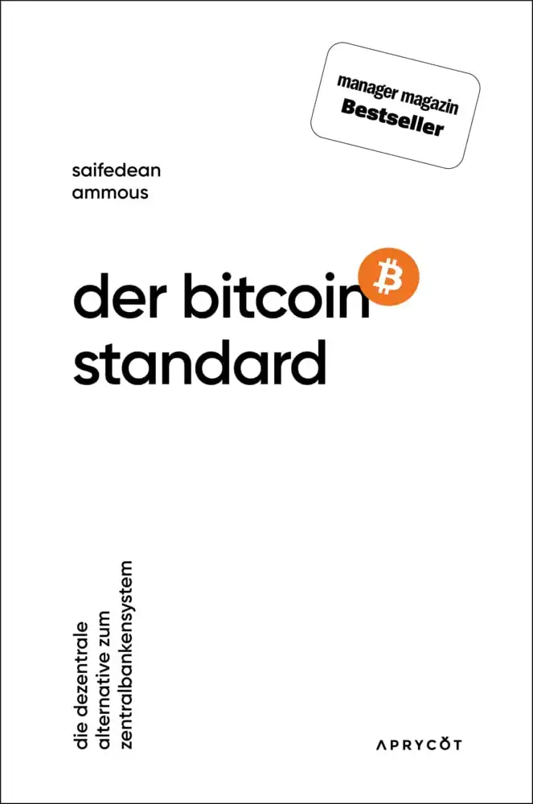
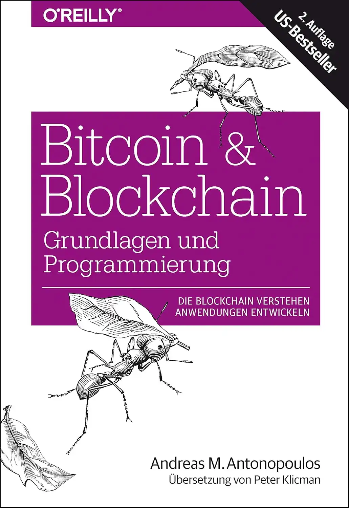
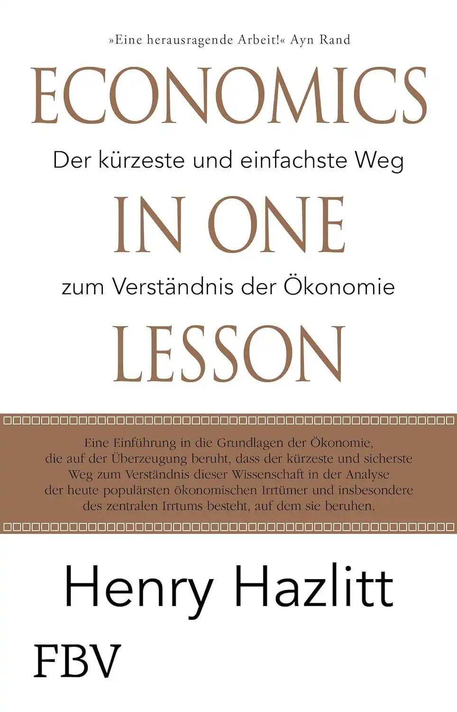

Bitcoin Bücher
In dieser Sammlung findest du Bücher zu Bitcoin, Ökonomie und Finanzthemen, die ich persönlich gelesen und für besonders empfehlenswert halte.
| Buch | Beschreibung / Rating |
|---|---|
|
Das souveräne Individuum: Der Übergang zum Informationszeitalter
Wirtschaft, Politik
|
Sollte wirklich jeder gelesen haben! Es geht darum, welche Einflüsse das Informationszeitalter auf die Zukunft von Nationalstaaten und auf jeden Einzelnen haben. Danke an @RosarotePanzer für die tolle Übersetzung! |
|

Der Bitcoin Standard (2019)
Bitcoin, Wirtschaft
|
Das Werk zu Bitcoin schlechthin. Ein Must-read für jeden, der sich tiefer mit der ökonomischen Bedeutung von Bitcoin auseinandersetzen möchte. Nicht für komplette Einsteiger geeignet. |
| Ein sehr gutes Buch, vor allem für Einsteiger. Es beleuchtet zunächst die Geschichte des Fiatgeldes und erklärt dessen Schwachpunkte und präsentiert anschließend Bitcoin als Lösung | |
| Eine sehr gute Einführung in die österreiche Ökonomielehre | |
|  | Sehr gut, um das technische Modell hinter Bitcoin zu verstehen. Selbst, wenn man selbst nicht programmiert, kann man hier vieles lernen. |
|  | Ein perfektes Buch, um die Grundlagen der Ökonomie zu verstehen. Der Name ist Programm! |
| - | |
|
Bitcoin für Einsteiger
Bitcoin
|
- |
Hinweis: Die Links zu den Büchern sind sogenannte Affiliate-Links. Wenn du über diese Links etwas kaufst, erhalte ich eine kleine Provision. Der Preis bleibt für dich unverändert. Danke für deine Unterstützung!